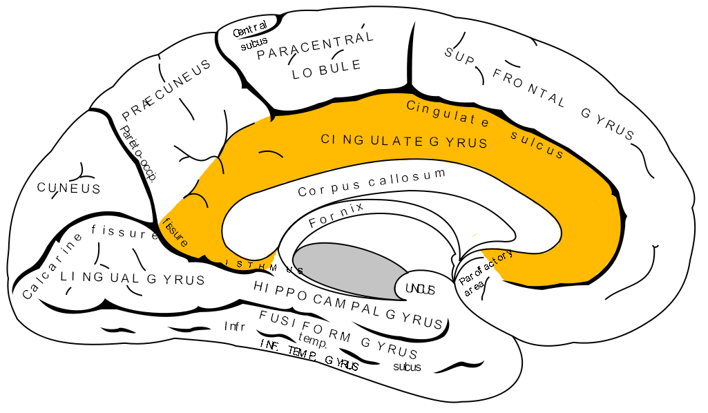

My Axioms
Statements or propositions regarded as being established, accepted, or self-evidently true.
Will
Anything you like doing will not increase your willpower. What develops the Anterior Mid-Cingulate Cortex is doing what sucks
As much as the brain can grow, it can shrink. That's neuroplasticity. Consistency consolidates. NO DAYS OFF. I believe this is what is meant when Jesus says. "Whoever loves his life will lose it (doing what you want will shrink your brain network) But whoever hates his life in this world will keep it for eternal life (doing what sucks will grow your brain and body)"

The Anterior Mid-cingulate cortex grows when you continue doing what you don't like to do. Your will gets stronger the harder you do things that suck.
Some look for excuses or reasons to blame. Those that make it work look for solutions.
You need to be vulnerable with yourself to change. As Carl Jung writes, "Your vision will become clear only when you can look into your own heart." You need to look into your heart and acknowledge what needs to be attended to. "Who looks outside, dreams; who looks inside, awakes." Wake up! There is a part of you that needs your work and attention.
We cannot change anything until we accept it. Condemnation does not liberate, it oppresses.
Carl Jung
If something is important enough, even if the odds are stacked against you, you should still do it.
Elon Musk
Education breeds confidence. Confidence breeds hope. Hope breeds peace.
Confucius
It's super hard to compete with somebody who is having fun.
Chris Williamson
There is always an alternative
The decisive factor is decision, the power to choose between what you want now and what you want most
You can ride a rollercoaster for its destination, but you ride it because you enjoy the journey. You can work out just to get it over with, but you do it because the act itself is rewarding (endorphins, myokines). The fun of mathematics is not found in proving a particular theorem (a fixed destination), but in stimulating the mind by forming connections between concepts to solve problems (the journey).
Same with writing assignments. It is not a waste of time to research different viewpoints before developing your own. That's the whole point of the assignment, although some students will only focus on completing the work quickly or satisfying the grader. This is a good short-term strategy, but will it work in the long-term?
You want to sharpen your thoughts more than you want the grade.
Other internal conflicts can be:
Pride vs Humility,
Complaining vs Volunteering,
Avoidance vs Acceptance, and
Lemon vs Lemonade
He who sweats more in training will bleed less in war
Do you want to actually die, or let your simulations die so that you can live?
Encourage yourself to take on challenging problems even if you end up making lots of mistakes. Mistakes are opportunities for brain growth. You don't learn by reading and listening, but by doing. Being bad at it is just the first step towards being good at it.
An apple a day keeps the doctor away
Loving yourself requires the capacity to recognize that there is something about you that you need to work on
Try not to fool yourself saying, “it is only 5 minutes a day”. Get those 5 minutes optimized: prepare good food for breakfast, improve your sleep quality and bedtime/morning routine, smile to that person you see all the time, and read, write, and listen to the truth every day. If 5 minutes a day is so powerful, how much would you learn if you let yourself make mistakes and stumble for hours a day?
You need moments when you realize that you do not have it all together and that you are not perfect. If you deny that your behavior is inadequate and fail to seek ways to redeem yourself by learning from what you have done wrong, then you are also denying yourself the opportunity for growth and self-love.
Whatever You do, you do for the truth
2 Corinthians 13:8
You cannot do anything against the truth, but only for the truth. What you can do is challenge the truth and accept the truth: your limitations, mortality, and finitude. You have them regardless of whether you accept it. And when you do accept them, the idea of transcending them may give your suffering its meaning. Accepting limitations means that you are constructing a better coordination of what you can do to overcome them. Accepting limitations means that you accept that you will not reach perfection but can still do something to help yourself and those around you.
Acceptance does not imply reduction of work; it implies reduction of unnecessary, disoriented, unfocused work. You are saving yourself from wasting emotion, attention, time, and energy better pointed at self-expansion and growth. The upside to knowing when you have failed is that you learn from it
Whom you spend your time with, there your heart will be also
Modified Version of Matthew 6:21
The point here is to remember to set aside time to spend getting to know yourself. (Because your heart should not be outside of your body) You might think, "aren't I always spending time with myself?". That depends on the definition of "with". You are the closest person to yourself in terms of physical distance, but there are other ways to define interpersonal distance.
Consider emotional distance. Can you empathize with yourself? How well do you understand what you are going through? Does your lexicon include the right words and concepts you can use to describe yourself? How well do you understand why you are taking action in life? How well do you understand your motives, what gives your life meaning, what you are willing to die for, and the essence of who you are? You need time to ask these questions, answer them, and listen to your own answers.
Life is unpredictable (making it very experimentable)
Let go of the outcome and celebrate progress instead
You do not know whether things will go as planned, but neither do you know if they should. You only know that you are constrained by the truth that you are not aware of. The truth you already know and have accepted no longer bothers you. Think gravity. Is it so frustrating that you are stuck to the ground? The same goes for life's problems and responsibilities.
The greatest good the unknown might confer might be that which would allow us to transcend our innate limitations. The worst the unkown could be is death, or lengthy suffering followed by death. The emotional set covered by the unknown is therefore very large, ranging from that which we desire most intently to that which we fear most. (Peterson, Maps of Meaning)